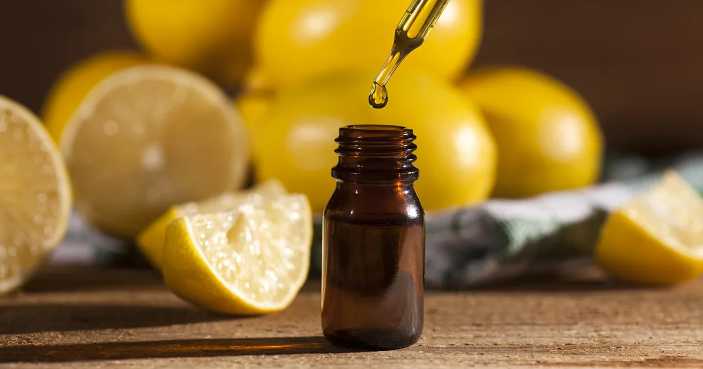
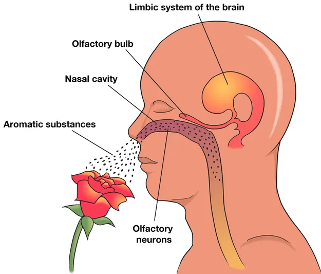
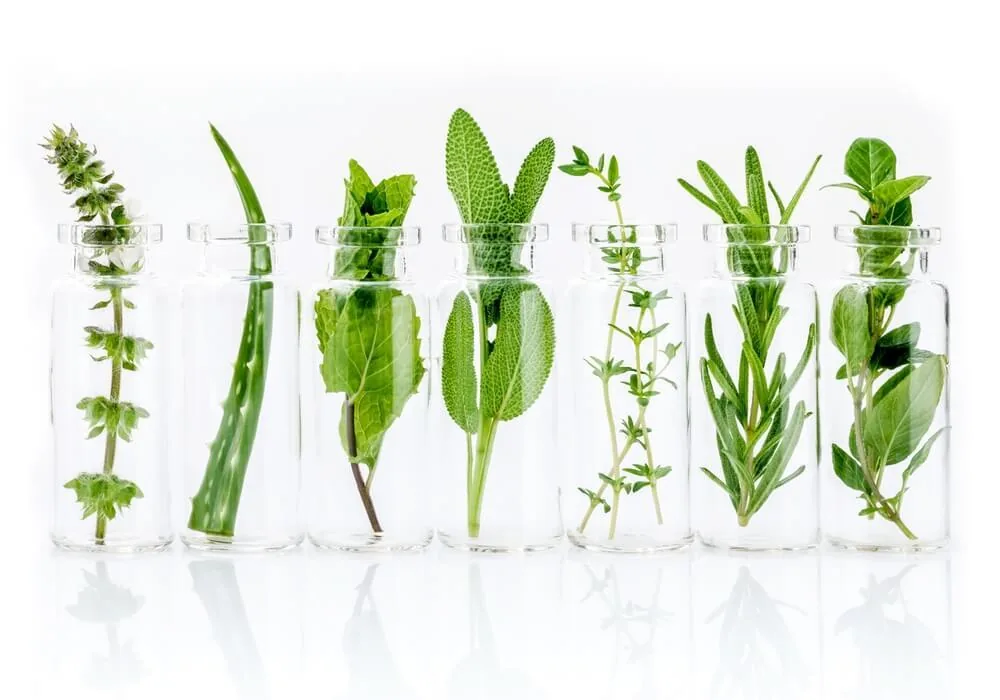

The basic principles of aromatherapy
“The way to health is to have an aromatic bath and a scented massage every day.”
— Hippocrates

History
The therapeutic, mental, hygienic and ritual appliance of essential oils were popular among several ancient civilisations, such as the Chinese, the Native Americans, Egyptians, Greeks and Romans who used them in cosmetics, perfumes and medicine. These oils were used for aesthetic pleasures and for the beauty industry. It was considered as a luxury payment method. They thought that essential oils can prolong the expiration date of wine and improve the taste and quality of food.
In the first century Dioscorides wrote about his beliefs in oils and their healing powers in De Materia Medica. Distilled essential oils were used as medicine from the 11th century when Avicenna used isolated essential oils gained by steam distillation.
It was mentioned first in 1937 in modern medical history as a therapeutic method when René-Maurice Gattefossé chemist published his book Aromathérapie: Les Huiles Essentielles, Hormones Végétables. The English version was published in 1993.
In 1910 Gattefossé burnt his hand severely and stated later that the essential oil of Lavender helped him heal it.
A French surgeon, Jean Valnet played a pioneering role in the medical use of essential oils. He used them to disinfect the wounds of injured soldiers during the second World War.
What is it?
Aromatherapy is a holistic, immune-booster, illness-preventing complementing therapy that aids the body’s self-healing mechanism, affects the psyche, and dissolves anxiety and stress.
Aromatherapy involves the use of essential oils to promote and maintain health and vitality. These essences are extracted from aromatic plants, flowers and trees. The properties of these oils, and their lack of side-effects when used correctly, make aromatherapy a viable alternative and addition to orthodox treatment for many conditions.
The oils are used in many forms: massage, inhalation (olfactory therapy), aromatic baths, compresses, cosmetic preparations and many other specific applications. Due to the extreme concentration of plant material in each essential oil droplet, essential oils are invariably diluted before use, and must be used with great care.
How does it work?
Scientific research is constantly producing more information on the action of essential oils. We know that there are three basic routes by which the oils are absorbed into the system. During inhalations the vapours are inhaled. The lungs are lined with a rich blood supply which readily absorbs the essential oil molecules. These than travel around the body for several hours before they are eliminated.

During massage, the diluted blend of essence and vegetable oil is absorbed into the blood stream through the pores in the skin. A uniform absorption takes place during a full body massage as the essences travel into the interstitial fluid between each cell.
The actions of the essences then vary according to their constituents. Some stimulate our circulation, increasing the rate of elimination of toxic substances such as uric acid. Other oils act on specific organs, increasing their secretions of body chemicals such as the production of bile by the liver, or oestrogen by the ovaries. The majority are highly antiseptic, and thus extremely useful in the treatment of infections. Many essences also have an analgesic effect, and the aromatherapy treatment can stimulate the release of endorphins – body chemicals which have a painkilling and anti-depressant effect.
Most essential oils have a specific effect on the emotional as well as the physical level. As the vapours are inhaled impulses pass along the olfactory nerve from the nasal cavity, which is connected to the limbic system in the brain. Their application through smelling is the most important, since with the help of oxygen the healing molecules of essential oils immediately get to this part of the brain that deals with memory and emotions. Certain oils then stimulate specific neuro-chemicals within the nervous system. Sedative oils such as lavender and marjoram stimulate the neuro-chemical serotonin, which induces sleep. These oils therefore have a calming, sedating effect and can, for instance, be used to treat tension and insomnia.
The body replies to the smells as nervous impulses with emotions. It replies to Jasmine essential oil with the production of endorphin and oxytocin, to Ylang-ylang with endorphin, to Rosemary with adrenaline, to Lavender and Chamomile with serotonin a dopamine.
Subtle aromatherapy puts great emphasis on the processes of the soul. The essential oils extracted from plants have secondary healing powers.
The oils extracted from the flower have the most effect on the heart and soul. They make the soul blossom. The leaf is where the plants breathe, so the oils extracted from here have an effect on the respiratory system, as well as in difficult, stressful situations when you need to take a deep breath to release.
The roots of a plant are where nutrients are taken in and they offer stability to the plant. The oils extracted from the root, helps the digestive system, gives stability, and helps us to connect to Mother Earth to return to our roots and ground our energies aiding the function of the root chakra. When the plant is injured it produces resin and covers the injured area with it. We can achieve the same effect if we cover our wounds with oils extracted from resin, protecting and healing the injured skin area. Fruits are the metaphor of reward and playfulness. Oils of citruses take us back to our childhood, fill us with joy. They connect us with earthy, worldly energies, helping us to get back to ourselves, our inner child and increasing our self-confidence. In the seeds we can find power and life waiting to erupt. Therefore oils from seeds can be used in life situations where numbness, weakness and immobility are present. The bark is the armour of the plant. These oils are energetically hugging the soul, protecting it, such as the oil extracted from cinnamon.
These examples demonstrate how the diverse actions of the essences have far-reaching and wide-ranging actions. Holistic aromatherapy, by restoring and promoting the balance between body and mind, can help prevent illness. If illness or mechanical damage occur, aromatherapy then stimulates the body’s ability to help itself.
Different forms of aromatherapy
Although essential oils have been used for at least 5000 years, aromatherapy today is still undergoing the process of rediscovery and evolution.
- clinical aromatherapy: this involves using the oils internally, taking tiny prescribed dilutions orally. Some therapists, French doctors trained in aromatherapy practise this method but it is NOT recommended for home use.
DO NOT TAKE ANY ESSENTIAL OILS ORALLY WITHOUT QUALIFIED MEDICAL SUPERVISION! - holistic aromatherapy: this form of treatment should be practised by well-trained practitioners (see IFA Accredited schools). The initial consultation should involve talking through medical history, diet, exercise, general life-style and any problems encountered. The whole person should be taken into account, not just one specific symptom.
- aesthetic aromatherapy: many beauty therapists now include essences in treatment oils, creams and lotions, to be used on superficial level, primarily for skin treatment. Many of the essences have an extremely beneficial action on the skin, and this treatment can be both pleasant and rewarding. Many people mistakenly believe that aromatherapy is basically a beauty treatment. This is only one of the many facets that aromatherapy treatment has to offer.
Why aromatherapy?
There has been a general upsurge of interest in holistic medicine of different types. Herbalism, acupuncture, homeopathy, these therapies and others aim at treating the whole person using remedies which are free from harmful side-effects, and help to prevent the symptoms of disease.
Holistic aromatherapy combines both an extremely enjoyable treatment and self-help advice which constitutes an effective therapy in its own right. The many factors that combine to lower our quality of life, and ultimately our state of health, can often be tackled by holistic aromatherapy, by rebalancing the system and restoring homoeostasis.
It is no coincidence that we get cold when we can least afford the time or energy to deal with. Neither is it surprising that we are down emotionally, everything seems to go wrong, for this is the time when our immune system becomes less effective, and we are open to the adverse effects of our environment and life style.
We are very sensitive tactile creatures, we need human contact. Massage is an instinctive reaction. When we bang ourselves, we rub the area to ease the pain, we comfort a child by a hug and a cuddle. As we mature, the physical contact diminishes, and yet general pressures often increase. The compassionate impartial massage relieves muscular spasm, reeducating the muscles, enabling us to achieve a more relaxed posture. The circulation is stimulated, increasing the rate of toxin removal. Problems may be shared, and pressures eased. General peace of mind is promoted. The merit of such treatment and the use of essential oils in the home cannot be over emphasized.

Essential and base oils
An essential oil is a highly concentrated aromatic substance which evaporates easily. It is extracted by distillation, solvent extraction or expression from a single source. This may be any species of flower, fruit, grass, leaf, seed, root or tree.
Essential oils are liquid substances that aid physical and mental balance. It is an ethereal substance that disappears in light, so we can say its quality is that of the soul. They are produced by the plant from water, light and soil. It is an immune response from the plant to protect itself.
Essential oils produce a stable vibration in the space. They have a higher vibration than fresh herbs that have similar vibration to human’s vibration.
Buying essential oils
There is currently considerable confusion when it comes to buying good quality essential oils.
These are some basic rules to remember:
- If they are labelled ‘aromatherapy oils’ or any description other than pure essential oil it is unlikely that they are pure essences. They will probably contain a high percentage of vegetable or mineral oil to ‘stretch’ the pure essential oil. The therapeutic properties will therefore be greatly reduced.
- True essential oils are often expensive. Some of the basic (and versatile) essences such as lavender, tea-tree and the citrus oils can be produced reasonably inexpensively, and their cost should therefore reflect this. The oils of rose, jasmine, neroli and others come from delicate flowers. The extractions process is an expensive one, and the price will be concomitantly high. If it is not, they will be not pure essences.
- Essential oils should be sold in dark glass bottles. This again may be an indication of purity and quality, for if the oils have been kept in clear glass or plastic the light may have detrimentally affected them.
Buying base oils
The best quality, vegetable base or carrier oils are obtained by cold-pressing. The ‘virgin’ oil is the highest quality and comes from the first pressing. It contains the highest vitamin and mineral content, and have been produced by natural means. The best base oil will therefore be labelled cold-pressed, and often virgin too. Most will have a rich colour and a characteristic aroma.
How to store essential and base oils?
Both essential and vegetable base oils will need to be stored in the right conditions to keep well. They react to strong sunlight, oxygen and heat. They should be kept in dark glass bottles in a dry, cool, dark place.
The average shelf life for an essential oil is two years. Citrus essences have the shorter shelf life of one year, as they have a high proportion of limonene. Some essential oils, notably the thicker essences extracted from trees will last up to five year or longer. A few essences, such as patchouli and myrrh actually improve with age.
The more often the oil is used, the more quickly the oxygen in the air combines with certain constituents in the oil to oxidise it. When this happens, the therapeutic effect of the oil gradually diminishes and the aroma will be altered. The oil will eventually go cloudy, base oils even smell rancid, a sign that it has gone off.
Carrier/base oils
The use of high-quality vegetable oil in aromatherapy is obviously very important. They provide a natural medium in which the essential oil can be diluted without harmfully altering their therapeutic effect. The vegetable oil molecules are absorbed into the blood-stream through the skin pores, unlike mineral oils. The nutritional constituents of the vegetable oils such as vitamins nourish the skin itself.
The quality of the oils is important. The more highly processed the vegetable oils are, the less vitamin content will be retained. The best quality oils are therefore those which have been cold-pressed and untreated by chemicals.
Once opened and exposed to the oxygen in the air, vegetable oils will last up to six month. They should be kept in the fridge and discarded if the mild characteristic smell begins to turn rancid, and the clear oil becomes cloudy.
Important points to remember when using essential oils
- each drop of essential oil is extremely concentrated and should be used with great care
- certain essences (generally stimulatory, emmenagogue etc.) should NOT be used during pregnancy
- most essential oils should NOT be used during the first three month of pregnancy, essences may stimulate menstrual bleeding, causing abortion
- babies and children have very delicate system and sensitive skin. They are inclined to rub their eyes and suck fingers. Essential oils should therefore be used in very small amounts and with great care.
- great care should be taken avoid getting essential oils in the eye
- it is advised to dilute essential oils in a small amount of base oil, salt or honey before adding to the bath. This ensures the essence is uniformly dispersed, and does not cause irritation.
- never use more than 10 drops of essential oil in the bath.
- never use higher than a 2,5% dilution of essences unless under professional instruction
- never give or take essential oils orally without consulting your medical practitioner
- those with sensitive skin may find it prudent to use a 1% dilution of essential oil to help prevent allergic reaction, also advisable to avoid any oils which are possible skin irritants
- always consult a medically qualified practitioner in the event of serious illness, or worsening condition. This especially important where children are concerned.
If in doubt, consult your medical practitioner
Aromatherapy massage
Aromatherapy is the use of essential oils to promote healing and feeling of well-being and relaxation in the recipient. The essential oils are extracted from the parts of herbs and plants and contain all the properties of the plants themselves. There are several ways of applying the oils, including adding the oils to your bath or inhaling them through the nose is thought to promote beneficial changes in the mind and body by affecting the limbic system (region of the brain known to influence the nervous system) but the most popular and effective is through massage.
Aromatherapy massage is a therapy enhanced with highly contracted plant oils = essential oils added to the massage oil and have been used for thousands of years to benefit physical, mental and emotional health.
During aromatherapy massage, the skin is warmed and the blood drawn to the surface, increasing circulation and encouraging the elimination of toxins from the body, which has the consequence of speeding up recovery time from any illness or injury. The manipulation of the muscles continues the process, whilst at the same time releasing tense knotted muscles by dispersing the build up of lactic acid which often occurs after exercise. As the circulation increases, the oils are absorbed through the skin and carried round the body, allowing their healing effects to permeate to all the major body organs.
In choosing the oils for an aromatherapy massage, the aromatherapist generally creates a synergistic blend of 3-5 oils which are then added to a carrier oil. A synergistic blend means that when a particular set of oils are combined together, they enhance each other's properties, and make a pleasing scent.
This treatment will totally relax you and help drive out tensions. It's a perfect antidote to the stresses of modern life.